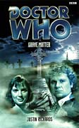

|
Grave Matter
|
BASIC PLOT DOCTOR COMPANIONS MATERIALISATION CIRCUIT PREPARATORY READING CONTINUITY REFERENCES Pg 12 "'Well,' he said absently, 'even a man who is pure of heart may lose his mind when the wolfbane blooms.'" This may be a reference to Wolfsbane, which features Harry Sullivan as a man who is pure of heart, and the Eighth Doctor as a man who has (memory-wise at least) lost his mind. Pg 28 "The end of his stick made small circles on the edge of the grave as he considered. Then in a sudden anger of decision he drove the stick deep into the soil." This is visually very similar to a moment in Remembrance of the Daleks, without actually having anything to do with it. Pg 31 "Peri would like to have known about the wildlife and the plants that grew here." Justin Richards has remembered that Peri is a Botany student, as we learned in Planet of Fire, but which was only referenced infrequently after that point. Pg 34 "And while his body could metabolise the alcohol so that it had no effect on him (if he wanted), it might provide unwanted attention if he drank too much of the brew with no apparent effects at all." Sometimes the Doctor seems able to metabolise alcohol quickly, and sometimes he seems unable to. This 'if he wanted' line rather neatly solves the problem of how sometimes he doesn't get drunk (Alien Bodies suggests that he can't) and sometimes (Slipback and Transit are the most obvious occasions) he does. Grave Matter's comment on the subject is agreed with in The Quantum Archangel. Pg 40 "The Doctor leaped to his feet, pushing his chair noisily aside and exclaiming at the top of his voice in what might have been ancient High Gallifreyan." A language used in The Five Doctors. Pg 41 On the local beer: "'I don't think so, thank you. Excellent though it is. Do you brew it yourself?' he hazarded. From the amused expression on Dave Madsen's face as he turned away, the Doctor guessed he had hit the mark." This is very similar to a moment in Battlefield, without actually having anything to do with it. Pg 54 "With luck we can find our way back to the TARDIS in time for lunch and a quick trip round the White Hole of Stelabilis." While I am certain that we've never been here and will never go, this sounds like somewhere close to Metebelis (The Green Death, Planet of the Spiders and the Doctor's constant promise to take people there in Terrance Dicks novels) without actually having anything to do with it. Pg 60 "He made a point of holding the old lady's arthritic hand for several moments after he shook it goodbye, and of looking into her pale old eyes as he thanked her for the conversation and said how much he had enjoyed it. He knew what it was like to be old and unappreciated." The Doctor's absolutely charming behaviour with the local gossip is clearly connected to his memories of the latter years of his first incarnation. You might like to check his increasing need to collapse in The Man in the Velvet Mask and The Tenth Planet, for example. Pg 61 "There was an innocent charm about school playtime that somehow attracted him. A microcosm of the Universe in which the evil forces were a nervous bully, the gods were the teachers, and a definition of suffering involved either mild detention or overcooked cabbage." This sounds like the basis of some aspects of the plot of Human Nature, without actually having anything to do with it. Pg 66 On children's behaviour: "'They're worse when it's windy. Quieter in the fog.' She shrugged towards her coffee. 'Funny how the weather affects them.'" It doesn't really matter, but, if you're interested, this is entirely true. As a teacher, I can assure you that child behaviour is at its absolute worst in windy weather, and I'm damned if I can tell you why. Pg 68 "He showed the ace of hearts. The Doctor and Miss Devlin exchanged amused glances as he slotted it into the pack and shuffled clumsily. He held the pack out to the Doctor who smiled and lifted the top card. It was the ace of hearts. He felt his own hearts miss a beat." The idea of teaching one child a thing and all the others learning it is integral to the plot of John Wyndham's novel, The Midwich Cuckoos (filmed, twice, as Village of the Damned) without actually having anything to do with it. Pg 74 "The back door was locked as well. But far from expressing disappointment, the Doctor produced a long thin wire implement, hooked at one end and with a kink in the middle. 'Never fails,' he confided as he slid it into the ancient lock and juggled it about." This may be the lockpick that the Doctor used in Pyramids of Mars which he claimed to have got from Marie Antoinette. Pg 99 "'Vampires,' Peri breathed. The word seemed to hang in the air. Sir Edward gaped. The Doctor pursed his lips. 'That's ridiculous,' he decided, after a moment's hesitation." He's right - it's not vampires, and presumably the Doctor's hesitation is him checking over his memories of State of Decay and Goth Opera to work out whether this has anything in common. Pg 118 "'So what do you do exactly? You and the Doctor?' Janet asked. 'I get confused, mostly,' Peri told her. 'And the Doctor, well, he does the confusing.'" This is similar to the final scene of The Mark of the Rani ('What do you do in there?' 'Argue, mainly.') without actually having anything to do with it. Pg 119 "Peri nodded. 'Right.' She laughed. 'I used to want to change the world.' 'But not any more?' 'Oh no,' said Peri. 'No, now we just save it.'" Attack of the Cybermen is probably the only point that this is strictly true as regards Earth in Peri's adventures so far, but she's presumably speaking in generalizations. She has helped save any number of other worlds. Pg 129 "Janet used to be my department's technical liaison with the European Space Agency." This is probably the same agency which sent up Mars Probe 7 in The Ambassadors of Death. Pg 148 "And then she saw the shapes rising up from the waves in front of her. And screamed. There were two of them, their heads cresting the waves. Peri knew at once that they must be the fishermen, the men who had been out in the boat with Mike Neville's brother. And they were every bit as dead as he was. Their clothes clung to their bodies, moulded on by sea water. Their hair was lank and matted across their heads. Water was pouring out of the open mouth of one of them as he surfaced, as if his lungs were full of it." This is visually very similar to a moment in The Curse of Fenric (not to mention The Sea Devils and The Dalek Invasion of Earth) without actually having anything to do with it. Pg 157 "We know from the herding instinct, the way the children assimilate behaviour and abilities, that there's a collective consciousness of some sort. But it certainly isn't conscious in any way that we would understand. It's just a life form trying to survive the only way it knows. Somehow this whole process is its life cycle and you've got plugged in as the necessary symbiotic host." The behaviour of the Denarian is quite similar to that of the eponymous drug in Warlock, without actually having anything to do with it. Pg 158 "'You may not like me,' the Doctor went on, his voice also quieter now. 'You may not like what I do, what I shall have to do. But I'm here to help you, and it may be that I'm the only help you have.' He turned away, suddenly bright and cheerful again." This moment of characterization (suddenly deathly serious and then almost forgetting what he's just said) is startlingly similar to Justin Richards' interpretation of the amnesiac Eighth Doctor (see The Burning, Time Zero and Sometime Never... specifically) without actually having anything to do with it. Pg 169 "'Given the choice between a body that can renew and repair itself, or being merely human?' Packwood set down his cup on the saucer on the mantel. 'What would you say, Doctor? Given that choice.'" The Doctor, unsurprisingly, can't answer the question. Interestingly, this is kind of the choice he later makes in Human Nature, while some aspects of The Burning and Casualties of War, as he works out that he is not, in fact, human, also have resonance here. Pg 192 "I assume you know how to work a mobile phone." As it turns out, Peri doesn't, having come from Earth in 1984 (we assume, given that this was the transmission date of Planet of Fire) before they were quite so prevalent. Pg 209 "Sheldon was nursing his healing hand, clutching it close to his body. Stubby fingers had sprouted from the stump of his new palm. It was somehow fascinating to watch the genetic healing process, and at the same time grotesque." Which is interesting, because the Doctor would actually do much the same thing in The Christmas Invasion. Pg 218 "As he reached the door, the Doctor threw out his arms again, turning a full circle as he declaimed: 'We are become life!' Then he threw back his head and laughed." The Doctor, it transpires, is pretending to be possessed here, and the description is consistent with his impersonation of possession in The Trial of a Time Lord episodes 5-8 (Mindwarp), albeit without actually having anything to do with it. Pg 220 "The Doctor had stopped in front of the tall metal cabinet by the fridge. He pulled the handle and the whole frame of the cabinet rattled in response. 'Hmm,' he muttered. 'Important enough to be kept locked. Where's the sign about the leopard?' he wondered." This is a reference to The Hitch-Hiker's Guide to the Galaxy, which is also referenced in Ghost Light and The Christmas Invasion. Pg 221 "Are you saying that the two batches of material battled it out inside my body?" The resolution to the plot, in which two different forms of the virus destroy each other, is very similar to the plot resolution of the X-Files episode 'Ice', without actually having anything to do with it. Pg 242 On flying a helicopter: "The Doctor nodded, sucking in his cheeks. 'Well,' he said slowly. 'It can't be that difficult. Can it?'" This is exactly what the Doctor says in Fury from the Deep when he is about to try and fly a helicopter. "'I'm sure I've done it before,' he murmured." Indeed he has, in Fury from the Deep. He also flies something similar in The Mind of Evil. Pg 243 "He saw Peri sitting cross-legged outside the coach house staring down at her sodden clothes." Peri in a wet T-shirt competition was (and may well still be) many a fan-boy's dream. Pg 246 "As the yellowish blue shape of the TARDIS became misty and faded into the echoing fog, a pair of seagulls rose from the branches of a nearby tree. They turned their pale eyes towards the sound of the sea, and set off through the thickening night towards the mainland." The implication here is that the seagulls are still infected, and will carry the Denarian to the bulk of Britain, which is another homage to the 'but it may happen again' ending of so many episodes of the X-Files. Also, rather gloriously, it's a kind of ironic reworking of the ending of most Paul Cornell novels, which feature owls looking at each other owlishly and flying off. Without actually having anything to do with said novels. OLD FRIENDS AND OLD ENEMIES NEW FRIENDS AND NEW ENEMIES Among the chorus of rather freakish-seeming villagers, you can find Robert Trefoil, a publican, and his daughter Liz; Hilda Painswick, the farmer; Sir Anthony Kelso, a retired civil servant (who also went by the name of Sir Edward Baddesley for a time); Jed; Ian; Nick; Mrs Tattleshall; Miss Devlin and her schoolchildren charges, including Josh, James, Emma and Timmy Crespin; Old Jim. On Sheldon's Folly: Christoper Sheldon; Miss Janet Spillsbury; Rogers, the Manservant. On the mainland: Madge Simpson, although the Doctor never meets her.
CONTINUITY COCK-UPS PLUGGING THE HOLES [Fan-wank theorizing of how to fix continuity cock-ups] FEATURED ALIEN RACES FEATURED LOCATIONS The island of Dorsill itself, on which one would find a harbour and a village containing a pub - the Dorsill Arms, a church, a farm (Heather Hill Farm), a school and some houses, including Cove Cottage. Also the Island of Sheldon's Folly, and the house there, which incorporates various labs as well as living quarters. The date is kept deliberately obscure - it seems nineteenth century, but it's not. The appearance of some modern technology, specifically mobile phones, DNA computers and Genetically Modified food, leads me to speculate that it is, in reality, set around publication date of 2000, probably in the second half of the year (Kelso retired from the Ministry of Science in March). The action takes place over a period of four days. IN SUMMARY - Anthony Wilson |
|
 |